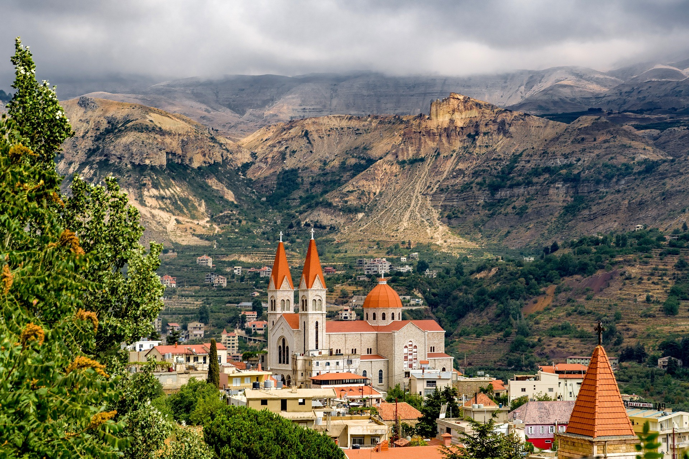
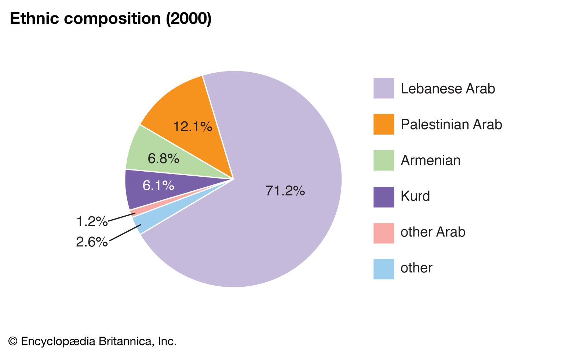

Nature/Parks
Lebanon is most famously known for their Cedar trees and snow capped
mountains. In-fact the Lebanese Flag contains a graphic of a Cedar
Tree outline. Additionally, Lebanon also has a varying sub tropical
weather which makes it a very nice place to visit during the warmer
months. During winter in Lebanon there is an average of 30 to 40
Inches of precipitation on most of the land and in the Mountains there
tends to be heavy snowfall that lasts till early summer.
Lebanon
has a couple of famous parks that are full of nature also. Firstly,
Lebanon is home to the Forest of the Ceadars of God. This forest is
home to most of Lebanons Cedars and it was given this name due to its
heritage in the culture of the people of Lebanon. Secondly, Lebanon is
also home to the Kadisha Valley which is a masive valley that is
sometimes referred to as the "Holy Valley". This valley is located
around the foot of Mount al-Makmal in northern Lebanon.
History of Lebanon / Major Cities
Lebanon is known for its vast culture and history. It is home to many
different types of people varying from simple religious differences to
completely different backgrounds. It is known for not being very big
and it is only about the size of Fresno County in California.
Additionally, it is bordered by the Mediterranean Sea to the left,
Israel to the South, and lastly Syria to the North and East. Lebanon
is quite a small Country with only a very small population of
7,660,000 Million people living there. Some of the Major Cities
located in Lebanon are; Beirut, Capital, Tripoli, Sidon, Tyre, and
Jouneih.


Demographics of Lebanon
Lebanon is known for its varying culture and religions that are all
spread into such a small area. Britannica.com states in a Ethnic
Composition photo that Lebanon is made up of 71% Lebanese Arabs, 12%
Palestine Arabs, 6.8% Armenians, 6.1% Kurd, and 3.8% of other
countries. Clearly, Lebanon has a wide variety of backgrounds in such
a small area which is partially why there are not that many big and
famous cultural traditions there. Additionally, Britannica.com lists
the Religion Composition of Lebanon in a photo: 27% Shi’i Muslim, 27%
Sunni Muslim, 21% Maronite, 8% Greek Orthdox, 5.6% Druze, 5% Greek
Catholic, and 6.4% of other religions. All these religions have great
tensions with one other since they are all living within close
quarters of each other. This causes many issues with under
representation in Government since Lebanese politics are heavily
affected by religious beliefs. For Example, BBC News states That
Lebanon was in a “Lebanese civil war” for 15 years. Overall Lebanon
has a great amount of diversity but this does lead to some
difficulties with agreement politically and culturally.